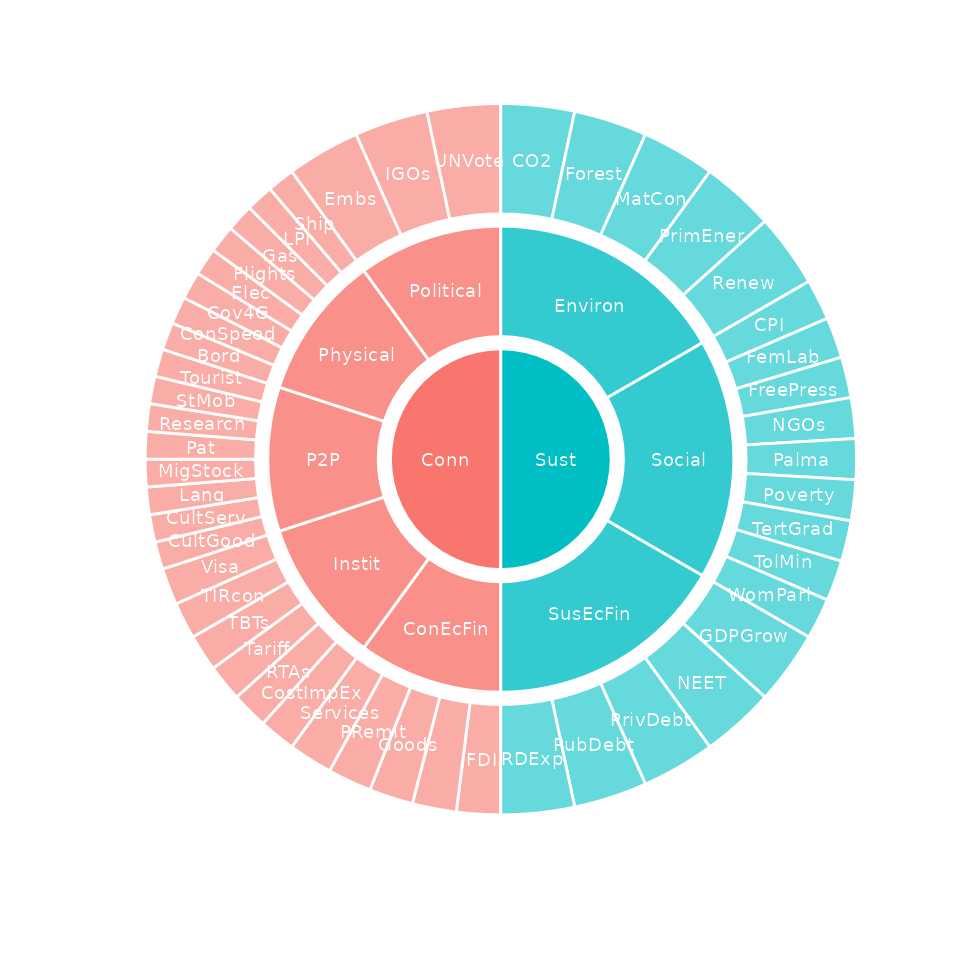
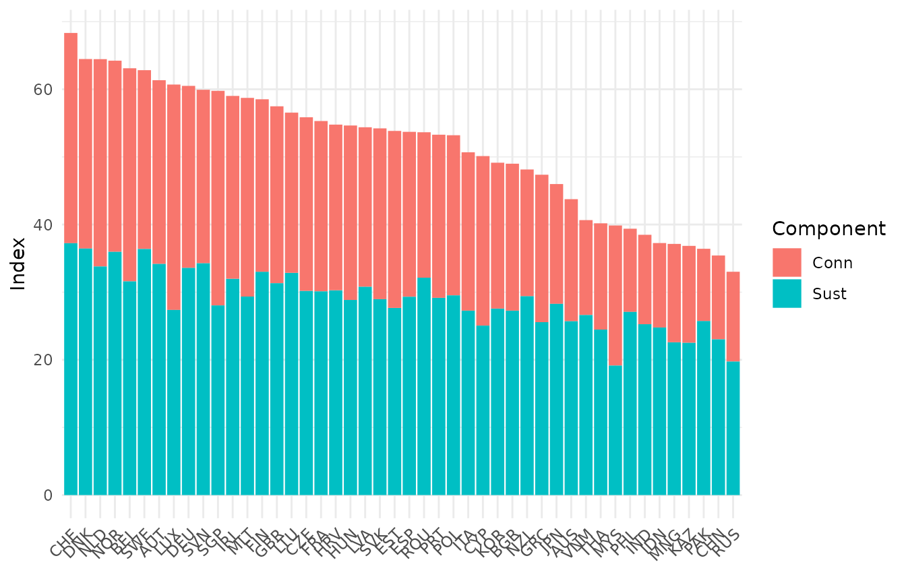

Introduction
This vignette introduces and gives an overview of the COINr package. COINr is a high-level R package which is the first fully-flexible development and analysis environment for composite indicators and scoreboards.
This vignette is one of quite a few vignettes which document the package. Here, the aim is to give a quick introduction and overview of the package. The other vignettes deal with specific operations.
As of COINr v1.0.0 some radical changes have been introduced. Most notably for existing users, is the change in syntax. This is an unfortunate one-off necessity and the changes (and how to survive them, or roll back to the old version of COINr) are described in an extra vignette called Changes in v1.0.
Installation
COINr is on CRAN and can be installed by running:
install.packages("COINr")Or simply browsing for the package in R Studio. The CRAN version will be updated every 1-2 months or so. If you want the very latest version in the meantime (I am usually adding features and fixing bugs as I find them), you can install the development version from GitHub. First, install the ‘remotes’ package if you don’t already have it, then run:
remotes::install_github("bluefoxr/COINr")This should directly install the package from Github, without any other steps. You may be asked to update packages. This might not be strictly necessary, so you can also try skipping this step if you prefer.
Once the package is installed, it can be loaded as follows:
Features
The main features of the COINr package are those for building the composite indicator by performing operations on the data, those for analysing/post-processing, and those for visualisation. Here, the main functions are briefly listed (this list is not exhaustive):
Building functions begin with a capital letter,
except for new_coin() which is used to initialise a coin
object
| Function | Description |
|---|---|
new_coin() |
Initialise a coin object given indicator data and metadata |
Screen() |
Screen units based on data availability rules |
Denominate() |
Denominate/scale indicators by other indicators |
Impute() |
Impute missing data |
Treat() |
Treat outliers and skewed distributions |
qTreat() |
Simplified-syntax version of Treat()
|
Normalise() |
Normalise indicators onto a common scale |
qNormalise() |
Simplified-syntax version of
Normalise()
|
Aggregate() |
Aggregate indicators using weighted mean |
Building functions are defined as those that modify the data (by creating an additional data set). They also keep a record of their arguments inside the coin, which allows coins to be regenerated. See Adjustments and Comparisons.
Analysing functions include those multivariate analysis, weight optimisation and sensitivity analysis, as well as those for reporting results:
| Function | Description |
|---|---|
get_corr() |
Get correlations between any indicator/aggregate sets |
get_corr_flags() |
Find high or low-correlated indicators within groups |
get_cronbach() |
Get Cronbach’s alpha for any set of indicators |
get_data() |
Get subsets of indicator data |
get_data_avail() |
Get data availability details of each unit |
get_denom_corr() |
Get high correlations between indicators and denominators |
get_eff_weights() |
Get effective weights at index level |
get_opt_weights() |
Get optimised weights |
get_results() |
Get conveniently-arranged results tables |
get_sensitivity() |
Perform a global uncertainty or sensitivity analysis |
get_stats() |
Get a table of indicator statistics |
get_str_weak() |
Highest and lowest-ranking indicators for a given unit |
get_unit_summary() |
Summary of scores and ranks for a given unit |
remove_elements() |
Test the effect of removing indicators or aggregates |
Plotting functions generate plots using the ggplot2 package:
| Function | Description |
|---|---|
plot_bar() |
Bar chart of a single indicator or aggregate |
plot_corr() |
Heat maps of correlations between indicators/aggregates |
plot_dist() |
Statistical plots of indicator/aggregate distributions |
plot_dot() |
Dot plot of an indictaor/aggregate with unit highlighting |
plot_framework() |
Sunburst or linear plot of indicator framework |
plot_scatter() |
Scatter plot between two indicators/aggregates |
plot_sensitivity() |
Plots of sensitivity indices |
plot_uncertainty() |
Plots of confidence intervals on unit ranks |
Adjustment and comparison functions allow copies, adjustments and comparisons to be made between alternative versions of the composite indicator:
| Function | Description |
|---|---|
Regen() |
Regenerate results of a coin object |
change_ind() |
Add and remove indicators |
compare_coins() |
Exports all data frames in the COINr object to an Excel workbook |
compare_coins_multi() |
Convert a COINr class object to a COIN class object, for use in the ‘COINr’ package |
Other functions are useful tools that don’t fit into the other categories
| Function | Description |
|---|---|
import_coin_tool() |
Import data and metadata from the COIN Tool |
COIN_to_coin() |
Convert an older “COIN” class object to a newer “coin” class object |
build_example_coin() |
Build the example coin using built-in example data |
build_example_purse() |
Build the example purse using built-in example data |
export_to_excel() |
Export contents of the coin to Excel |
All functions are fully documented and individual function help can
be accessed in the usual way by ?function_name.
The COINr package is loosely object oriented, in the sense that the composite indicator is encapsulated in an S3 class object called a “coin”, and a time-indexed collection of coins is called a “purse” (see Building coins) Most of the main functions listed in the previous tables take this “coin” class as the main input (and often also as the output) with other function arguments specifying how to apply the function. E.g. the syntax is typically:
coin <- COINr_function(coin, function_arguments)Many of the main COINr functions are generics: they have methods also for data frames, purses, and in some cases numeric vectors. This means that COINr functions can also be used for ad-hoc operations without needing to build coins.
Quick example
The COINr package contains some example data which is used in most of the vignettes to demonstrate the functions, and this comes from the ASEM Sustainable Connectivity Portal. It is a data set of 49 indicators covering 51 Asian and European countries, measuring “sustainable connectivity”. Here we work through building a composite indicator, and link to the other vignettes for more details.
Before proceeding, let’s clearly define a few terms first to avoid confusion later on.
An indicator is a variable which has an observed value for each unit. Indicators might be things like life expectancy, CO2 emissions, number of tertiary graduates, and so on.
A unit is one of the entities that you are comparing using indicators. Often, units are countries, but they could also be regions, universities, individuals or even competing policy options (the latter is the realm of multicriteria decision analysis).
We begin by building a new “coin”. To build a coin you need two data
frames which are inputs to the new_coin() function. See the
vignette on Building coins for more details on
this.
ASEM <- new_coin(ASEM_iData, ASEM_iMeta, level_names = c("Indicator", "Pillar", "Sub-index", "Index"))
#> iData checked and OK.
#> iMeta checked and OK.
#> Written data set to .$Data$RawThe output of new_coin() is a coin class object with a
single data set called “Raw”:
ASEM
#> --------------
#> A coin with...
#> --------------
#> Input:
#> Units: 51 (AUS, AUT, BEL, ...)
#> Indicators: 49 (Goods, Services, FDI, ...)
#> Denominators: 4 (Area, Energy, GDP, ...)
#> Groups: 4 (GDP_group, GDPpc_group, Pop_group, ...)
#>
#> Structure:
#> Level 1 Indicator: 49 indicators (FDI, ForPort, Goods, ...)
#> Level 2 Pillar: 8 groups (ConEcFin, Instit, P2P, ...)
#> Level 3 Sub-index: 2 groups (Conn, Sust)
#> Level 4 Index: 1 groups (Index)
#>
#> Data sets:
#> Raw (51 units)Let’s view the structure of the index that we have specified, using
the plot_framework() function:
plot_framework(ASEM)
See the Visualisation vignette for the full range of plotting options in COINr.
At the moment the coin contains only our raw data. To build the composite indicator we need to perform operations on the coin. All of these operations are optional and can be performed in any order. We begin by denominating the raw data: that is, we divide some of the indicators by other quantities to make our indicators comparable between small and large countries. See the vignette on Denomination.
ASEM <- Denominate(ASEM, dset = "Raw")
#> Written data set to .$Data$DenominatedThe only thing we specify here is that the denomination should be
performed on the “Raw” data set. The other specifications for how to
denominate the indicators were already contained in the data frames that
we input to new_coin(). Running Denominate()
has created a new data set called “Denominated” which is reported in the
message when we run the function (we can choose another name if we
wish). This is additional to the “Raw” data set and does not
overwrite it.
Next we will screen units (countries) based on data availability. We
want to ensure that every unit (country) has at least 90% data
availability across all indicators. Screening is done by the
Screen() function:
ASEM <- Screen(ASEM, dset = "Denominated", dat_thresh = 0.9, unit_screen = "byNA")
#> Written data set to .$Data$ScreenedThe details of this function can be found in the Unit screening vignette. Again, by running
this function we have created a new data set. Let’s look again at the
contents of the coin using its print() method:
ASEM
#> --------------
#> A coin with...
#> --------------
#> Input:
#> Units: 51 (AUS, AUT, BEL, ...)
#> Indicators: 49 (Goods, Services, FDI, ...)
#> Denominators: 4 (Area, Energy, GDP, ...)
#> Groups: 4 (GDP_group, GDPpc_group, Pop_group, ...)
#>
#> Structure:
#> Level 1 Indicator: 49 indicators (FDI, ForPort, Goods, ...)
#> Level 2 Pillar: 8 groups (ConEcFin, Instit, P2P, ...)
#> Level 3 Sub-index: 2 groups (Conn, Sust)
#> Level 4 Index: 1 groups (Index)
#>
#> Data sets:
#> Raw (51 units)
#> Denominated (51 units)
#> Screened (46 units)Notice that the “Screened” data set now has 46 units because five have been screened out, having less than 90% data availability.
Next we will impute any remaining missing data points. This can be done in a variety of ways, but here we choose to impute using the group mean, i.e. if a country is in the “Asia” group, we replace missing points by the Asian mean. If a country is in the “Europe” group, we replace with the European mean.
ASEM <- Impute(ASEM, dset = "Screened", f_i = "i_mean_grp", use_group = "EurAsia_group")
#> Written data set to .$Data$ImputedThis writes another data set called “Imputed”, which has filled in all the missing data points. Again, we have to specify which data set to impute, and we have chosen the “Screened” data set. Full details of the imputation function can be found in the Imputation vignette.
We would next like to treat any outliers. The Treat()
function gives a number of options, but by default will identify
outliers using skewness and kurtosis thresholds, then Winsorise or
log-transform indicators until they are brought within the specified
thresholds. This function is slightly complicated and full details can
be found in the Outlier treatment vignette.
ASEM <- Treat(ASEM, dset = "Screened")
#> Written data set to .$Data$TreatedThe details of the data treatment can be found inside the coin. A
simplified version of Treat() is also available, called
qTreat(), which may be easier to use in many cases.
The final step before aggregating is to bring the indicators onto a
common scale by normalising them. The Normalise() function
will, by default, scale each indicator onto the \([0, 100]\) interval using a “min-max”
approach.
ASEM <- Normalise(ASEM, dset = "Treated")
#> Written data set to .$Data$NormalisedAgain, because Normalise() is a slightly complex
function (unless it is run at defaults, as above), a simplified version
called qNormalise() is also available. Details on
normalisation can be found in the Normalisation vignette.
To conclude the construction of the composite indicator, we must
aggregate the normalised indicators up within their aggregation groups.
In our example, indicators (level 1) are aggregated into “pillars”
(level 2), which are themselves aggregated up into “sub-indexes” (level
3), which are finally aggregated into a single index (level 4). The
Aggregate() function will aggregate following the structure
which was specified in the iMeta argument to
new_coin(). By default, this is done using the arithmetic
mean, and using weights which were also specified in
iMeta.
ASEM <- Aggregate(ASEM, dset = "Normalised", f_ag = "a_amean")
#> Written data set to .$Data$AggregatedDetails on aggregation can be found in the Aggregation vignette.
We now have a fully-constructed coin with index scores for each
country. How do we look at the results? One way is the
get_results() function which extracts a
conveniently-arranged table of results:
# get results table
df_results <- get_results(ASEM, dset = "Aggregated", tab_type = "Aggs")
head(df_results)
#> uCode Rank Index Conn Sust Physical ConEcFin Political Instit P2P Environ
#> 1 CHE 1 68.33 62.18 74.48 64.37 33.30 73.03 83.32 56.87 78.13
#> 2 DNK 2 64.47 56.05 72.90 50.17 30.52 76.98 71.59 51.01 70.53
#> 3 NLD 3 64.46 61.32 67.60 68.15 45.11 83.49 67.96 41.86 57.14
#> 4 NOR 4 64.23 56.53 71.93 57.45 25.39 78.95 87.10 33.75 71.55
#> 5 BEL 5 63.11 63.02 63.19 71.80 48.65 79.57 71.84 43.27 52.00
#> 6 SWE 6 62.82 52.88 72.77 51.90 23.93 80.10 70.04 38.43 68.34
#> Social SusEcFin
#> 1 87.63 57.67
#> 2 86.17 61.99
#> 3 86.00 59.65
#> 4 87.04 57.20
#> 5 85.36 52.22
#> 6 86.92 63.04This shows at a glance the top-ranking countries and their scores. See the Presenting Results vignette for more ways to generate results tables.
We can also generate a bar chart:
plot_bar(ASEM, dset = "Aggregated", iCode = "Index", stack_children = TRUE)
This also shows the underlying sub-index scores.
We will not explore all functions here. As a final useful step, we can export the entire contents of the coin to Excel if needed:
# export coin to Excel
export_to_excel(coin, fname = "example_coin_results.xlsx")